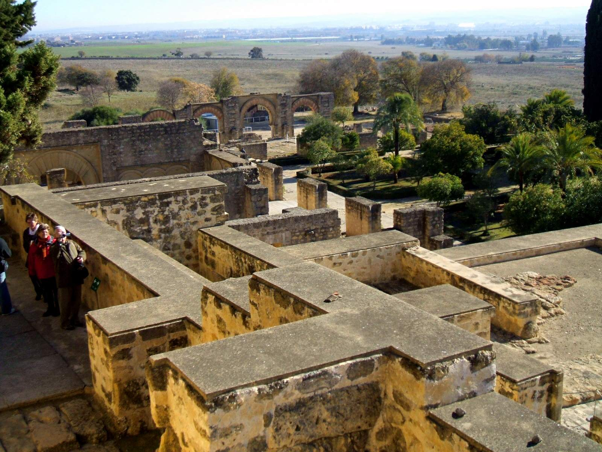

Medina Azahara

Ubicación y distribución
Está situada a unos 8 kilómetros al oeste de Córdoba, en las últimas estribaciones de Sierra Morena, en la ladera del Yabal al-Arus, frente al valle del Guadalquivir y orientada de norte a sur, sobre un espolón de la sierra, entre dos barrancadas, que se adentra en la campiña se encuentra Medina Azahara o Madínat al-Zahra. Ha sido calificada como el Versalles de la Edad Media. Fue elegida por los extraordinarios valores del paisaje, permitiendo desarrollar un programa de construcciones jerarquizadas, de tal manera que la ciudad y la llanura extendida a sus pies quedaban física y visualmente dominadas por las edificaciones del alcázar. Su implantación en el territorio generó una red viaria e infraestructuras hidráulicas y de abastecimiento para su construcción, conservada en parte hasta la actualidad en forma de restos de caminos, canteras, acueductos, almunias y puentes.
Aprovechando perfectamente el desnivel del terreno, la ciudad palatina de Medina Azahara fue distribuida en tres terrazas; el recinto de la ciudad adopta un trazado rectangular, frente a la idea laberíntica y caótica característica del urbanismo musulmán. De 1500 m de lado en sentido este-oeste y unos 750 m de norte a sur, se ve tan sólo deformado en el lado norte por las necesidades de adaptación a la difícil topografía del terreno. La topografía jugó un papel determinante en la configuración de la ciudad. Su emplazamiento sobre la falda de Sierra Morena permitió diseñar un programa urbano, en el que la ubicación y la relación física entre las distintas construcciones resultaran expresivas del papel de cada una de ellas en el conjunto del que forman parte: El palacio se ubica en la parte más alta, escalonando sus edificaciones por la ladera de la montaña, en una situación de clara preeminencia sobre el caserío urbano y la mezquita aljama, extendidos por la llanura.
Siguiendo la disposición en terrazas encontramos que la primera corresponde a la zona residencial del califa, seguido por la zona oficial (Casa del Ejército, cuerpo de guardia, Salón Rico, dependencias administrativas, jardines...) para finalmente albergar a la ciudad propiamente dicha (viviendas, artesanos...) y la mezquita aljama, separadas de las dos terrazas anteriores por otra muralla específica para aislar el conjunto palatino. La investigación, ha revelado una morfología urbana caracterizada por la existencia de grandes áreas no edificadas, vacíos que se corresponden con todo el frente meridional del alcázar, garantizando así su aislamiento y el mantenimiento de su apertura visual sobre el paisaje de la campiña creando un paisaje idílico. De hecho, los únicos espacios edificados en este nivel inferior son dos amplias franjas extremas: la occidental, con una trama urbana de ordenación ortogonal, y la oriental, con un urbanismo menos rígido.
Historia
El Califato de Córdoba fue un estado andalusí proclamado por Abderramán III, de la dinastía omeya, en el año 929 d.C. que conllevó al mayor esplendor político, social y económico de la España musulmana, haciendo de la ciudad de Córdoba la más avanzada de Europa y el asombro del mundo.
En el 750 d.C. la dinastía de los Omeyas es derrocada del Califato de Damasco por los Abasíes. Abderramán I el Emigrado, siendo miembro superviviente de los Omeyas, huye a Al-Ándalus proclamando el Emirato de Córdoba en 756 d.C. independiente de la nueva capital abasí, Bagdad. Abderramán I no se proclamó califa pero sí lo hizo uno de sus sucesores, Abderramán III, después de acabar con la inestabilidad política del emirato (principalmente la revuelta de Omar ben Hafsún). La creación del califato significó alzarse hasta el nivel de Estado del Califato de Bagdad con todo lo que ello conlleva, tanto religioso como político, en competencia con el califato abasí.
Bajo los reinados de Abderramán III (929-961) y su hijo y sucesor Al-Hakam II (961-976) se consolida el estado cordobés. Es ahora cuando Abderramán III echa en falta un símbolo de su poder religioso y político que represente al califato como lo es una ciudad palaciega donde residir junto a su corte. En el año 936 d.C. manda construir la fastuosa Medina Azahara junto a la capital, Córdoba. Surgida de la nada, la ciudad regia concentra todo el poder político del califato.
Las relaciones diplomáticas se centraron en los reinos cristianos de la península, con intensos diálogos y algunos enfrentamientos bélicos; el norte de África, contra los fatimíes que controlaban rutas comerciales clave con el África subsahariana desde donde llegaba el oro; y el Mediterráneo donde se mantuvieron relaciones diplomáticas con Bizancio.
Con el reinado de Hisham II (976-1016) el verdadero protagonismo lo tuvo el “hayib” o primer ministro Almanzor, genio militar en su lucha que mantuvo en jaque a los reinos cristianos del norte llegando a entrar en León, Pamplona, Barcelona o Santiago de Compostela donde se llevó las campanas del templo prerrománico dedicado a Santiago hasta Córdoba.
Al morir Almanzor en el 1002 d.C. los problemas sucesorios desembocaron en una “fitna” o guerra civil en el año 1010 d.C. hasta que en 1031 d.C. se decide acabar con el califato pasando a ser ahora Al-Ándalus un compendio de diferentes pequeños reinos o reinos de taifas, perdiendo su hegemonía y dando lugar a un mayor empuje por parte de los reinos cristianos.
Fue durante la “fitna” cuando Medina Azahara se abandonó y comenzó su progresiva destrucción con saqueos y finalmente su olvido total. Los almorávides, que irrumpieron desde el norte de África en Al-Ándalus en 1086 y unificaron los reinos taifas bajo su poder, desarrollaron su propia arquitectura, pero es muy poco lo que ha sobrevivido, ya que la siguiente invasión, la de los almohades, impuso un islamismo ultraortodoxo y destruyó prácticamente todos los edificios almorávides importantes, junto con Medina Azahara y otras construcciones califales.